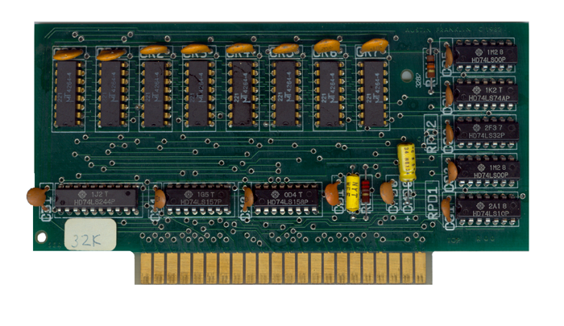
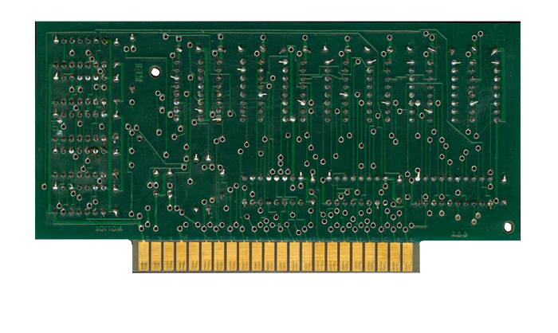

|


|

Austin Franklin 32K RAM Board Front

Austin Franklin 32K RAM Board Back
| This is another product sold
by Austin Franklin. A 32K RAM board that can
be installed into Slots 1 through 3 in the 800.
It was produced to allow users to be able to install
an Austin Franklin 80 (AF80) video card into Slot #3
and still be able to have up to 48K of RAM in their
system but substituting a 16K card in Slot #2 for
their 32K RAM board.
If you have the manual for this
product, please contact Curt so that we can discuss
having it added on the page for others to download
and access.
CLICK HERE |
Content to
be added, updated 3/10/2019 |